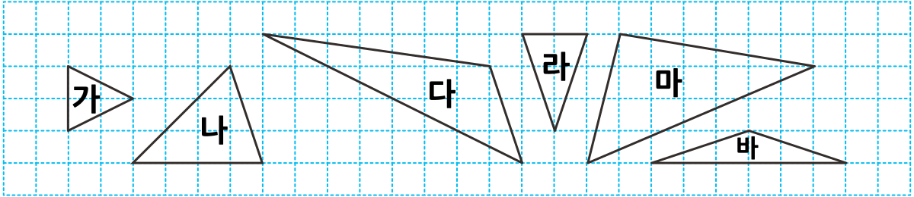

1
삼각자를 이용하여 삼각형을 분류해 봅시다.

삼각형을 어떻게 분류했는지 말해 보세요.
세 각이 모두 예각인 삼각형 가, 나, 라와 한 각이 예각이 아닌 삼각형 다, 마, 바로 분류했습니다.
둔각이 없는 삼각형 가, 나, 라와 둔각이 있는 삼각형 다, 마, 바로 분류했습니다.
분류한 삼각형을 각각 무엇이라고 부르면 좋을지 이야기해 보세요.
세 각이 모두 예각인 삼각형을 줄여서 예각삼각형이라고 부르면 좋겠습니다.
둔각이 있는 삼각형을 줄여서 둔각삼각형이라고 부르면 좋겠습니다.